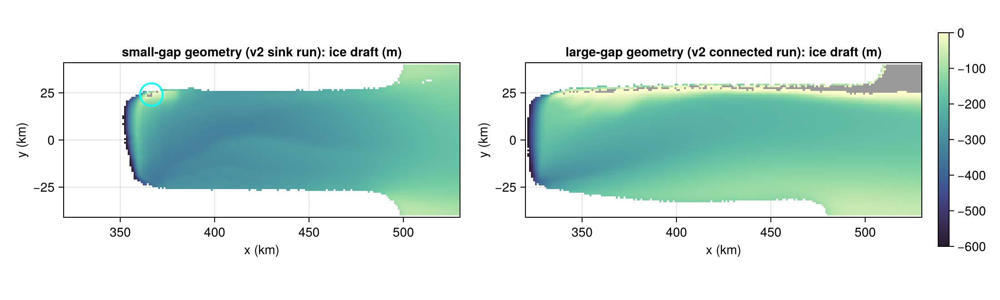
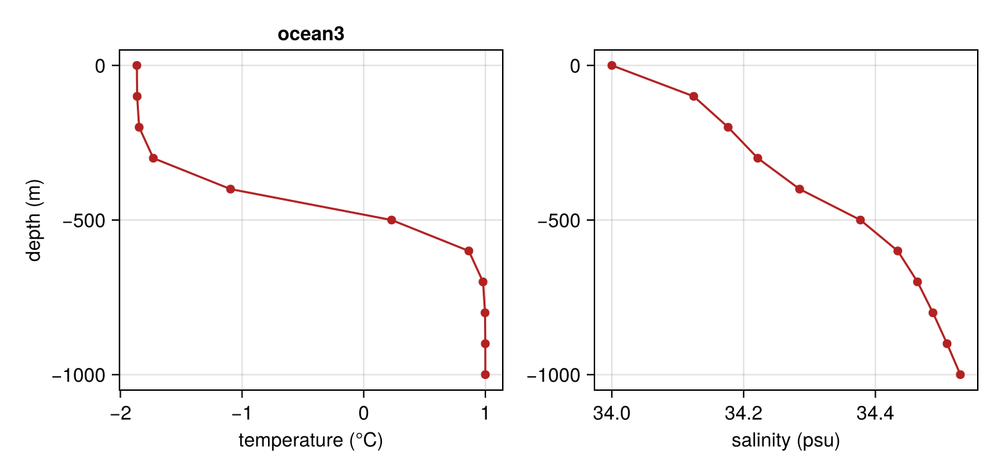
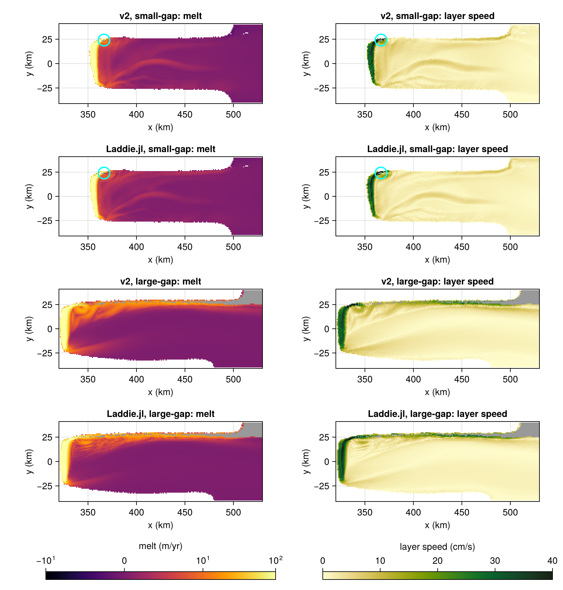

Ice-shelf gaps: sink vs connected (Jesse et al., 2026)
Jesse et al. (2026) couple LADDIE v2 to the ice-sheet model UFEMISM on a MISMIP+ geometry. As the northern shear margin thins, gaps melt through the shelf. The paper compares two treatments of the meltwater layer in such a gap:
- sink (
SinkGapsBC): the gap acts as a calving front, and the layer's heat and momentum leave the cavity there; - connected (
ConnectedGapsBC): the layer flows on across the gap, and melts nothing while it crosses.
After 200 years the two treatments have produced different shelves: a small-gap geometry (from the sink run, an opening of a few km²) and a large-gap geometry (from the connected run, an open margin some 300 km long). Laddie.jl has no ice dynamics, so it cannot repeat the coupled runs; it takes both year-200 geometries instead — the last column of the paper's Fig. 3 — and runs each with the treatment that produced it, which also compares it with LADDIE v2 on the same ice.
The settings follow the paper (its Table A1, and the MISMIP+ configuration of the v2 code). Two differences remain: v2 integrates with a forward–backward Runge–Kutta scheme on the 1 km triangular mesh of the coupled runs, and Laddie.jl with leapfrog on a 1 km C-grid.
The code is not executed by the documentation build, as it needs the paper's model output (papers/jesse-2026/data, 7.6 GB) on disk.
using Laddie
using CUDA
using KernelAbstractions
using NCDatasets
using Printf
using Statistics
using CairoMakie
FT = Float32 # half the memory traffic of Float64 on a GPU
backend = CUDA.functional() ? CUDABackend() : CPU()
const DATA = joinpath(pkgdir(Laddie), "papers", "jesse-2026", "data")
const RUNS = (small = "1km_oc3_EF0", large = "1km_oc3_EF1") # EF0 = sink, EF1 = connected
const YEAR = 200.0
const ASSETS = joinpath(pkgdir(Laddie), "docs", "src", "assets")The two geometries
docs/src/examples/ufemism_regrid.jl puts a UFEMISM snapshot on a regular grid: the ice draft and the bed by barycentric interpolation, the mask from the nearest mesh vertex, and LADDIE v2's own melt and layer velocity alongside. It also returns the ice footprint of the reference geometry (year 0), which is what makes an ice-free cell a gap — the reference's refgeo_Hi > 0 test, applied here by MarkGapsPreprocess.
include(joinpath(@__DIR__, "ufemism_regrid.jl"))
dx = dy = FT(1000) # the mesh resolution of the v2 runs
xc = collect(FT, -dx / 2:dx:800e3 + dx / 2) # cell centres, border ring included
yc = collect(FT, -40e3 - dy / 2:dy:40e3 + dy / 2)
snaps = map(RUNS) do run
regrid_snapshot(joinpath(DATA, run, "main_output_ANT_00001_decades.nc"), YEAR, xc, yc)
end
# The floating area on the grid must match the mesh it came from.
for (name, s) in pairs(snaps)
@printf("%-5s gaps: floating area %.0f km² on the grid, %.0f km² on the mesh; %d gap cells\n",
name, sum(==(3), s.mask) * dx * dy / 1e6, s.area_float / 1e6,
count(s.footprint .& (s.mask .== 0)))
endPlot helpers. Everything is shown on the cavity window of the full grid, with the gaps in grey; the five cells of the small-gap geometry are too small to see, so they are circled.
xkm, ykm = xc ./ 1e3, yc ./ 1e3
floating(s) = snaps[s].mask .== 3
gapcells(s) = snaps[s].footprint .& (snaps[s].mask .== 0)
masked(s, A) = ifelse.(floating(s), A, NaN)
function panel!(fig, i, j, s, A, title; kw...)
ax = Axis(fig[i, j]; title, aspect = DataAspect(), xlabel = "x (km)", ylabel = "y (km)")
heatmap!(ax, xkm, ykm, ifelse.(gapcells(s), 1.0, NaN); colormap = [:grey60])
hm = heatmap!(ax, xkm, ykm, A; kw...)
I = findall(gapcells(s))
if length(I) * dx * dy < 20e6 # a gap of a few km², too small to see
cx, cy = mean(xkm[k[1]] for k in I), mean(ykm[k[2]] for k in I)
poly!(ax, Circle(Point2f(cx, cy), 6f0); color = :transparent,
strokecolor = :cyan, strokewidth = 2)
end
xlims!(ax, 320, 530)
return hm
end
cols = ((:small, "small-gap"), (:large, "large-gap"))
fig = Figure(size = (1100, 330))
for (c, (s, label)) in enumerate(cols)
run = s === :small ? "v2 sink run" : "v2 connected run"
hm = panel!(fig, 1, c, s, masked(s, snaps[s].z_draft), "$label geometry ($run): ice draft (m)";
colormap = Reverse(:deep), colorrange = (-600, 0))
c == 2 && Colorbar(fig[1, 3], hm)
end
save(joinpath(ASSETS, "jesse-geometry.png"), fig)
Under the sink treatment only a few km² have melted through, at the north-western grounding line (circled — five cells at this resolution), where the boundary current starts. Under the connected treatment the northern margin is open over 300 km (grey), the ice behind it is thinner, and the grounding line has retreated 30 km further.
Forcing
The paper's ocean3 state: UFEMISM's TANH profile, a thermocline at 450 m depth with a 100 m scale depth, running from the surface freezing point at 34 psu to +1 °C at depth. Salinity follows from a stable quadratic density profile.
The sampling is part of the forcing. v2 never evaluates the profile continuously: it puts it on UFEMISM's ocean grid — every 100 m from the surface to 1500 m (ocean_vertical_grid_dz/_max_depth), linear in between and flat below — and that is what OceanForcing1D reproduces when it is handed those sixteen levels, since it sorts, resamples to 1 m and extrapolates flat. Evaluating the analytic profile every metre instead is a different forcing across the thermocline, which sits at the depth of this grounding line.
l1, l2 = -5.73e-2, 8.32e-2 # liquidus coefficients, as in Params()
alpha, beta, rho0 = 3.733e-5, 7.843e-4, 1027.0
S0, T_deep, z_tcl, z_scale, drho0 = 34.0, 1.0, 450.0, 100.0, 0.01
z = collect(-1500.0:100.0:0.0) # UFEMISM's ocean grid, which v2 samples on
depth = -z # positive downward
T0 = l1 * S0 + l2 # surface freezing temperature
Tz = @. T0 + (T_deep - T0) * (1 + tanh((depth - z_tcl) / z_scale)) / 2
Sz = @. S0 + alpha * (Tz - T0) / beta + drho0 * sqrt(depth) / (beta * rho0)
forcing = CavityForcing(OceanForcing1D(Tz, Sz, z; FT), PrescribedIceForcing(0.0))
fig = Figure(size = (720, 340))
sel = z .>= -1000
axT = Axis(fig[1, 1]; xlabel = "temperature (°C)", ylabel = "depth (m)", title = "ocean3")
axS = Axis(fig[1, 2]; xlabel = "salinity (psu)")
scatterlines!(axT, Tz[sel], z[sel]; color = :firebrick)
scatterlines!(axS, Sz[sel], z[sel]; color = :firebrick)
save(joinpath(ASSETS, "jesse-forcing.png"), fig)
Parameters
From the paper's Table A1 and the v2 MISMIP+ configuration. These choices make Laddie.jl behave like v2 rather than v1:
UStarGamTMelting: the transfer coefficients scale with the friction velocity, $\gamma_T = \Gamma_T u_\star$;LambertEntrainment: what v2 calls'Gaspar1988'. Laddie.jl'sGasparEntrainmentis a different form, which gives a thinner layer and about 13 % less melt;drho_floor: v2 floors the density contrast in the entrainment at the same 0.005 kg m⁻³ as its convection;- an ice temperature of 0 °C (the
PrescribedIceForcingabove): v2 without ice thermodynamics uses the latent heat alone. The Laddie.jl default of −25 °C melts about 20 % less; NonlinearLateralViscosity: v2's shear-scaled viscosity. Itsladdie_viscosity(Ahin Table A1, 10) is the coefficient of that closure in the interior — not a viscosity in m² s⁻¹ — but v2's wall term uses the same number as a plain viscosity, which isA_hhere;TruncatedDepthGradient: v2's pressure gradient at the ice front;ClampDensity: v2's only convection treatment, a buoyancy floor;max_detrainment: v2 hard-codes a 1e-3 m s⁻¹ cap (laddie_physics.f90), and unlike v1's 0.5 it binds.
Walls are no-slip on both the grounding line and land, as in v2 — but v2's no slip is viscous only: both of its advection schemes skip grounded neighbours, so no momentum crosses a wall. NoWallAdvection takes the slip factor out of the momentum advection and leaves it in the viscous drag, which is v2's combination.
One v2 setting is deliberately left off: its 'upstream' momentum advection, which Laddie.jl has as UpstreamMomentumAdvection — the momentum riding on the thickness equation's donor-cell mass fluxes. It has no wall term of its own, so on this geometry, at v2's wall viscosity, the layer runs away at the grounding line (mean D 60 m against 10 m, peaks above 2 km, melt eight times v2's). It needs A_h = 50, five times v2's Ah, to hold — and then melts 9 % more than v2, against the 3 % below with the centred scheme Laddie.jl inherited from v1. The divergence takes both the ocean-level sampling and the detrainment cap: with either one on its own the run is stable. A C-grid counterpart of v2's own wall term is what this needs, and it does not exist yet.
params = Params(; FT,
melting = UStarGamTMelting(3.0e-2),
entrainment = LambertEntrainment(2.5),
drho_floor = 0.005 / rho0,
lateral_viscosity = NonlinearLateralViscosity(10.0),
front_pressure = TruncatedDepthGradient(),
convection_scheme = ClampDensity(0.005),
coriolis = CoriolisParameter0D(-1.37e-4),
A_h = 10.0, # the wall term of v2's viscosity
C_d = 2.5e-3, C_d_top = 2.5e-3,
K_h = 10.0,
max_detrainment = 1e-3,
rho0_seawater = rho0, rho_ice = 917.0,
D_min = 1.0, u_tide = 0.01, v_cut = 1.0,
D_init = 2.0, dT_init = 0.0, dS_init = -0.1,
)Runs
Each geometry runs from rest with the treatment that produced it, under AdaptiveDt, which sets the time step from a target CFL number instead of fixing it; it settles near 145 s, against the 100 s of the coupled runs. The total melt levels off after about 20 days, but the flow near the grounding line stays unsteady, so the fields shown are averages over days 20 to 30, sampled twice a day.
Sample the average in much shorter calls than this and AdaptiveDt will re-bootstrap the leapfrog on nearly every step — each run! is then too short for its own check interval — which inflates the melt rate by tens of percent.
const SPINUP, AVERAGE, SAMPLES = 20.0, 10.0, 20
function run_snapshot(s, gaps)
grid = Grid(s.mask, s.z_draft, dx, dy; x = xc, y = yc, z_bed = s.z_bed, FT, backend,
preprocess = [MarkGapsPreprocess(s.footprint)],
domain_cropping = MinRectangleDomainCropping(margin = round(Int, 6e3 / dx)))
model = Model(grid; forcing, params,
boundary = BoundaryConditions(; gaps, wall_advection = NoWallAdvection()))
sim = Simulation(model; dt = 100.0, tstep = AdaptiveDt())
run!(sim; days = SPINUP, verbose = false)
m = sim.model
melt, speed = zero(Array(m.melt)), zero(Array(m.melt))
for _ in 1:SAMPLES
run!(sim; days = AVERAGE / SAMPLES, verbose = false)
melt .+= Array(m.melt) .* m.seconds_per_year ./ SAMPLES
speed .+= hypot.(Laddie.im_half(Array(m.U.present)),
Laddie.jm_half(Array(m.V.present))) ./ SAMPLES
end
return (; sim, melt, speed)
end
sims = (small = run_snapshot(snaps.small, SinkGapsBC()),
large = run_snapshot(snaps.large, ConnectedGapsBC()))
for (name, s) in pairs(sims)
@printf("%-5s gaps: %d x %d cells, adaptive time step settled at %.0f s\n",
name, size(s.sim.model.tmask)..., s.sim.clock.dt)
endLaddie.jl and LADDIE v2 on the same geometry
Laddie.jl's fields, averaged over the last ten days, next to v2's own. Melt is on a symmetric log scale, as in the paper.
spy = sims.small.sim.model.seconds_per_year
# Laddie.jl integrates the cropped domain; put its fields back on the full grid.
function ongrid(s, A)
out = fill(NaN, size(snaps[s].mask))
out[sims[s].sim.model.grid.crop...] .= A
return masked(s, out)
end
laddie(s, field) = ongrid(s, getproperty(sims[s], field))
v2_melt(s) = masked(s, snaps[s].melt .* spy)
v2_speed(s) = masked(s, snaps[s].speed)
melt_kw = (colormap = :inferno, colorscale = Makie.pseudolog10, colorrange = (-10, 100))
speed_kw = (colormap = :speed, colorrange = (0, 40))
fig = Figure(size = (860, 900))
for (c, (s, label)) in enumerate(cols)
i = 2c - 1
panel!(fig, i, 1, s, v2_melt(s), "v2, $label: melt"; melt_kw...)
panel!(fig, i, 2, s, 100 .* v2_speed(s), "v2, $label: layer speed"; speed_kw...)
hm_melt = panel!(fig, i + 1, 1, s, laddie(s, :melt), "Laddie.jl, $label: melt"; melt_kw...)
hm_speed = panel!(fig, i + 1, 2, s, 100 .* laddie(s, :speed),
"Laddie.jl, $label: layer speed"; speed_kw...)
if c == 2
Colorbar(fig[5, 1], hm_melt; vertical = false, label = "melt (m/yr)")
Colorbar(fig[5, 2], hm_speed; vertical = false, label = "layer speed (cm/s)")
end
end
save(joinpath(ASSETS, "jesse-v2.png"), fig)
total_melt(melt) = sum(filter(isfinite, melt)) * dx * dy * 1000.0 / 1e12 # m/yr → Gt/yr
function pattern_corr(a, b)
ok = isfinite.(a) .& isfinite.(b)
return cor(a[ok], b[ok])
end
comparison = map(keys(snaps)) do s
lm, vm = laddie(s, :melt), v2_melt(s)
(; geom = s, v2 = total_melt(vm), laddie = total_melt(lm), corr = pattern_corr(lm, vm))
end
for c in comparison
@printf("%-5s gaps, total melt: v2 %.1f Gt/yr, Laddie.jl %.1f Gt/yr (%+.0f %%); melt pattern correlation %.3f\n",
c.geom, c.v2, c.laddie, 100 * (c.laddie / c.v2 - 1), c.corr)
end
The two models agree closely, although they share neither the mesh nor the time stepping. Laddie.jl reproduces the melt at the grounding line and the boundary current along the northern margin: it stops at the gap under the sink treatment and runs on to the front under the connected one, which is the paper's Fig. 3 (panels l, p, t, x). An opening of a few km² is enough to drain the current, which is the feedback the paper describes — a sink at the margin keeps the ice downstream thick, so no further gaps open there, while a connected layer keeps thinning the margin. The latest run gave:
| geometry | v2 melt (Gt/yr) | Laddie.jl melt (Gt/yr) | melt pattern correlation |
|---|---|---|---|
| small-gap (sink) | 40.1 | 38.9 (−3 %) | 0.972 |
| large-gap (connected) | 64.3 | 65.0 (+1 %) | 0.980 |
No single setting carries this. Sampling the ambient profile every metre instead of on v2's ocean levels gives 39.8 and 65.5 Gt/yr; without the wall, viscosity and detrainment settings above as well — Laddie.jl's own defaults, on the 1 m profile — it is 36.5 and 65.3, with correlations 0.966 and 0.978. Each is worth a few percent, and they are here because they are what v2 does, not because they were chosen to agree.
The page runs in Float32. On this problem it is not an approximation worth worrying about — Float64 gives 38.9 and 65.1 Gt/yr, the same correlations and the same mean layer thickness to 0.1 m — and it halves the time on the GPU.
To regenerate the figures, run LADDIE_DOCS_JESSE=true julia -t 16 --project=docs docs/make.jl; each run takes about 8 seconds on an RTX A4000 (17 in Float64), and far longer on the CPU fallback.
This page was generated using Literate.jl.